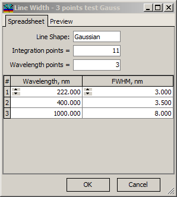
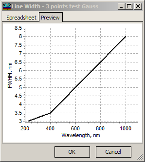

Line Width Database
The Line Width database allows users to store settings for the width of instrumentation spectral lines. This width may vary depending on the wavelength.

Line Shape allows the selection of Rectangular or Gaussian shapes for the spectral line.
Integration points specify the number of points used to evaluate integrals that express the influence of finite line width. Increasing the number of Integration points enhances accuracy but also increases computational time, which is proportional to this value. Recommended values for Integration points range from 5 to 15.
Wavelength points and the corresponding spreadsheet allow users to specify the dependence of spectral line width on wavelength. The spectral line width is described by FWHM (full-width-at-half-maximum) values as a function of wavelength. Typically, piece-wise linear interpolation is used to represent values between specified wavelength points, while constant value extrapolation is applied for wavelength points outside the specified range.

The Preview tab represents the specified dependency in a graphical form
Note: If an item from the Line Width database is loaded, then all evaluation and design computations are performed while taking into account line width settings.